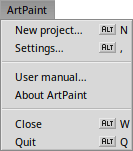
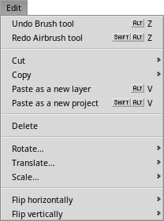

The menus
Most menus and their items are standard or don't need much explanation. Also, a short help text appears in the status bar, if you hover over an item. Let's just move quickly through them and concentrate on the not immediately obvious ones:
|  |
ArtPaintEverything related to the application itself: |
 |
FileAll the file handling: |
|  |
Editthe last action (the number of reversable actions can be adjusted in the settings). You can or the selection of the or from their submenus. The copied selection can then be or . Finally, you can the current selection. |
 |
LayerYou can and the current layer/selection. It'll pop up a window to enter the angle or x/y coordinates manually, or you can just rotate/move it all directly on the canvas. A right-click sets the rotation point. You can also , or the current layer. creates a new layer in front of the current one. More options are available from the Layers window. |
CanvasMany of the actions in this menu are similar to the ones in the Layer menu, but apply to the whole canvas, i.e. all layers: and open a panel to enter values manually, but you can also manipulate the canvas right in the window. | |
 |
Windowor between 25% and 800%. lets you activate an invisible grid of 2x2, 4x4 or 8x8 pixels. changes the main window size to best fit the canvas. Last is a list of all the special panels described in this manual a bit later. It's a good idea to memorize the shortcuts to them. |
Add-onsHere you'll find all available add-ons, see The add-ons. |
Back: The main window Next: The settings